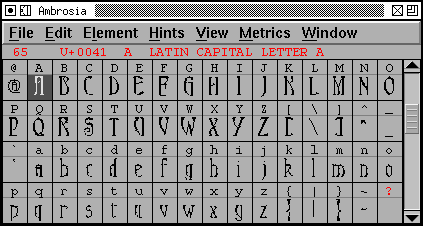
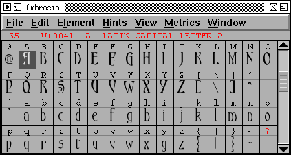
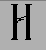
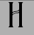

|
 |
 |
At screen pixel sizes the rasterizer has trouble rendering some of the finer details, but with anti-alias turned on the results are much better. In the "H" below, the one on the left (bitmap) does not show the double horizontal bar of the H very well, while it is well rendered in the one on the right. The results are more extreme in the example above.
|  |  |